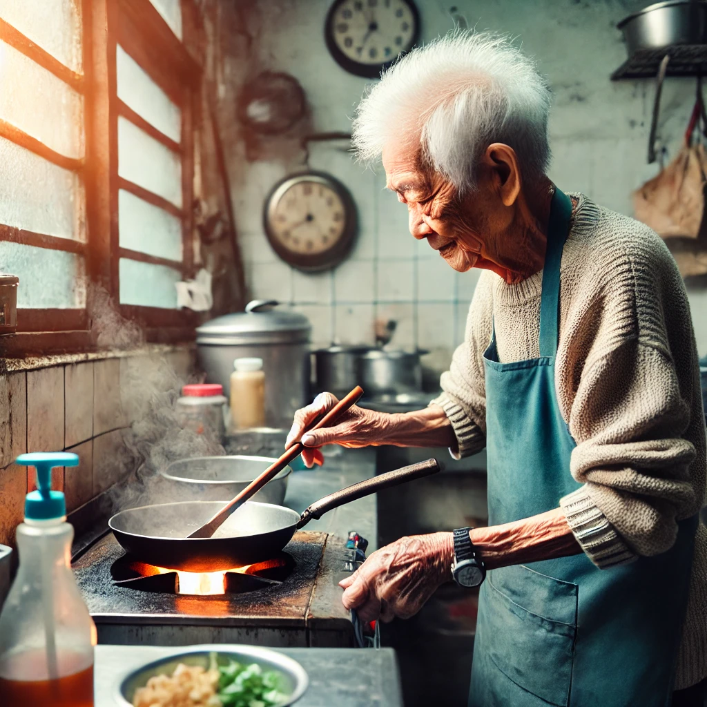

Finding Motivation in Everyday Heroes: A Reflection on Life's Inspirations
Motivation is an often complex and deeply personal aspect of life. For me, it emerges from various sources, each uniquely inspiring and pushing me forward with purpose. At the heart of my drive are the people around me—my teachers, family, the elderly, young children, and hardworking adults—whose determination, resilience, and sacrifices fuel my commitment to make a meaningful impact in my own life and the lives of others.
The Power of Teachers’ Dedication

My professors and teachers are central to my motivation. These remarkable individuals devote time, energy, and immense patience to help students like me grow and excel. Their dedication is not merely academic; it’s an investment in our future. I want to honor their efforts by applying what I’ve learned in practical, real-world settings.
Celebrating Unseen Efforts
I’ve come to appreciate how teachers often work quietly in the background, their efforts going unnoticed or underappreciated. Despite the lack of public recognition, they remain committed to their mission. They see potential in us, often more than we see in ourselves, and push us to achieve it.
Family Sacrifices: A Foundation of Support

Another driving force in my life is my family, whose sacrifices have always underscored the importance of hard work, resilience, and support. My parents, in particular, have constantly invested in my education and well-being, encouraging my siblings and me to pursue our dreams.
Inspiration in Everyday Moments
Reflecting on my family’s journey, I see resilience embedded in the smallest of actions—my mother’s late nights, my father’s long hours, and their unwavering support. These moments of sacrifice and love are reminders to keep pushing forward.
The Unseen Struggles of the Elderly: A Lesson in Perseverance
Living in Japan has brought me closer to a generation of elderly workers who defy age with resilience and determination. Many of these individuals work tirelessly, reminding me to never take my opportunities for granted.
A Lifetime of Experience in Every Wrinkle
Observing the elderly at work is like witnessing decades of stories etched into each wrinkle. Their endurance encourages me to face challenges head-on.
Children: A Source of Joy and Curiosity

Children are an unexpected source of motivation. Their innocence, curiosity, and willingness to share bring a fresh perspective on life.
Embracing Life’s Simple Pleasures
Observing children reminds me to find joy in the little things and face challenges with a sense of adventure.
Hardworking Young Adults: A Shared Responsibility

I draw strength from young adults balancing studies, work, and personal responsibilities, reminding me of our collective responsibility.
The Spirit of Grit and Tenacity
Their resilience highlights our common struggles and shared aspirations, making me feel connected to a community of dreamers and doers.
A Journey of Purpose and Resilience
Motivation comes in many forms, and I am fortunate to find it in the people around me. Their examples remind me to keep striving and approach each day with purpose.
Building a Legacy of Inspiration
Each person who has inspired me has contributed to who I am and who I strive to become. I hope my actions will serve as a source of motivation for others.